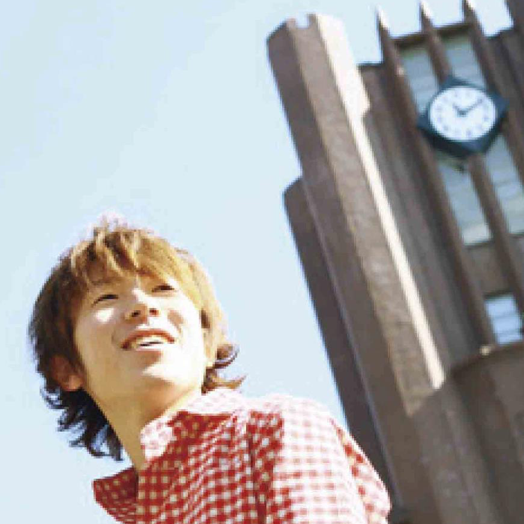

Reverse Engineer
home
about
works
contact
blog
about me

大森 有貴 / Yuki Omori
Summary
フリーランス。
システム開発、メディア運営、Youtuber、ライター、IT研修講師etc.
「好きなことだけして生きる」がモットー。新規事業を絶賛計画中。
意思決定の基準は「ワクワクするかどうか」
Interests
世の中の構造
創造的破壊
AI
ブロックチェーン
筋トレ
Strength Finder
戦略的思考に偏っています。行動出来る人と組むと上手くいきます。
戦略性
未来志向
最上志向
着想
学習欲
What I'm Good At
図解
分かりやすく教えること
ライティング（特に説明文）
思考の整理
事象のモデル化
人の背中を押すこと（ダチョウ倶楽部のやつではない）
色の仕組み
縄跳び
ソフトテニス
Biography
2002.4 ~ 2008.3
白陵中学・高校
2008.4 ~ 2010.3
東京大学 理科一類（教養学部）
2010.4 ~ 2012.3
東京大学 工学部 機械工学科
2012.4 ~ 2014.3
東京大学大学院 工学系研究科 機械工学専攻 設計工学研究室（村上柳澤研究室）
2014.4 ~ 2016.10
組織人事コンサル会社 経営企画
2016.12 ~ 2017.9
人材紹介会社 新規事業企画
2017.10 ~ 2018.4
G's Academy Lab4期
Activities
2008 ~ 2012
志塾塾講師
2009
ベネッセCM出演
2012 ~ 2013
本駒会共同創業・運営
2012 ~ 2013
個人家庭教師
Awards
2013
ヒューマンインターフェース学会 学術奨励賞 受賞
Publication
2009.5
『東大生が教える！超英語術』ダイヤモンド出版
2013.8
大森有貴，村上存，池田卓美，ディザ近似に基づく色の数や組み合せを制限しないカラー・ユニバーサルデザイン，ヒューマンインタフェースシンポジウム2013論文集，東京，2013，pp. 815-822．
2012 ~ 2015
その他同研究4本
Favorite Books
『ものぐさトミー』ウィリアム・ペーン デュボア作 岩波の子どもの本
『思考・論理・分析』波頭亮著 産能大出版部
『ZERO to ONE』ピーター・ティール著 NHK出版
『未来に先回りするする思考法』佐藤航陽著 ディスカヴァー・トゥエンティワン